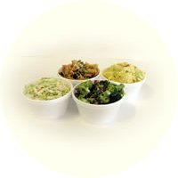

We brought to this business a strong work ethic and a vision...We would create a place where the food was the focus. Everything had to be absolutely made from scratch like you would at home...in small batches each day. Real food made by real people, not machines... where the mixing and prepping are done by hand and where you would use only quality ingredients. The world was moving faster, but we wanted a simple place, quiet atmosphere with the best comfort food...nothing fancy or trendy...just good, wholesome food reminiscent of years gone by.
The berrocks were our specialty, of course, and over time, we began to introduce other varieties. We were the first in our area to do this. Our first new variety was the shredded beef berrock, made with lean roast that is actually shred by hand. The barbeque beef and Mexican berrocks followed, along with the breakfast berrocks and the hors d'oeuvre berrocks which are so popular for entertaining. Since our berrocks are all hand made, not machine made, we are able to customize them in size and variety.
Our first year was full of menu improvements. We began making our own bread for the burgers and sandwiches, made homemade soups rather than serving canned, and expanded the deli salads with the addition of pasta, bean and rice pudding. Soon our famous chicken pot pies were introduced, and they quickly became a permanent menu item. We baked our own cookies which are actually old family recipes and offered fruit pies and turnovers with our delicious flaky crust.
Before long, our slogan, "Where Homemade is the Difference," was born, because it was clear that our passion for home cooking was what set us apart from our competitors. It wasn't about factory produced, high volume wholesaling... it was about the food. And by 1997, we had outgrown our small shop at Clinton and Weber and moved to our current larger location at Bullard and West Avenues in North Fresno.
We continued to expand our menu, adding more fresh salads and sandwich choices. But we never forgot what got us here...that little shop at Clinton & Weber where we proudly made all our food from scratch in small batches...the way we still do...almost 30 years later.